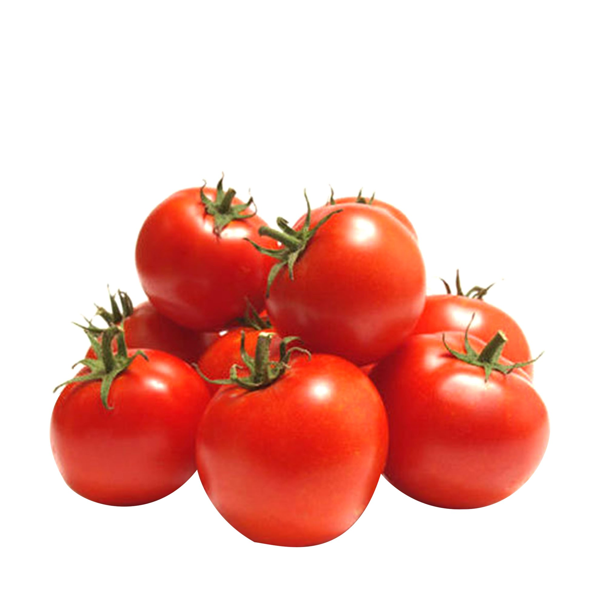
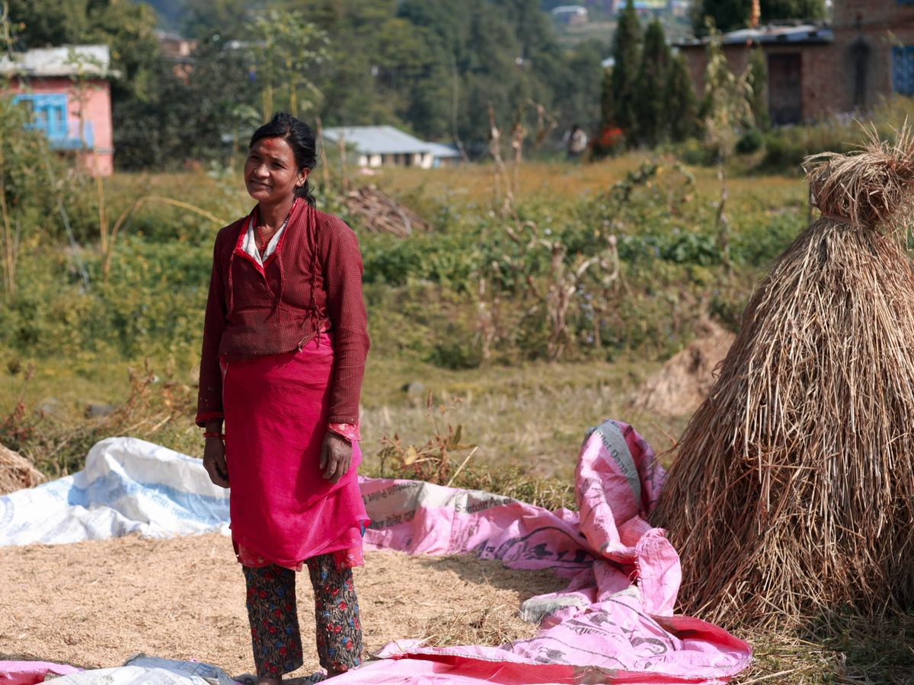
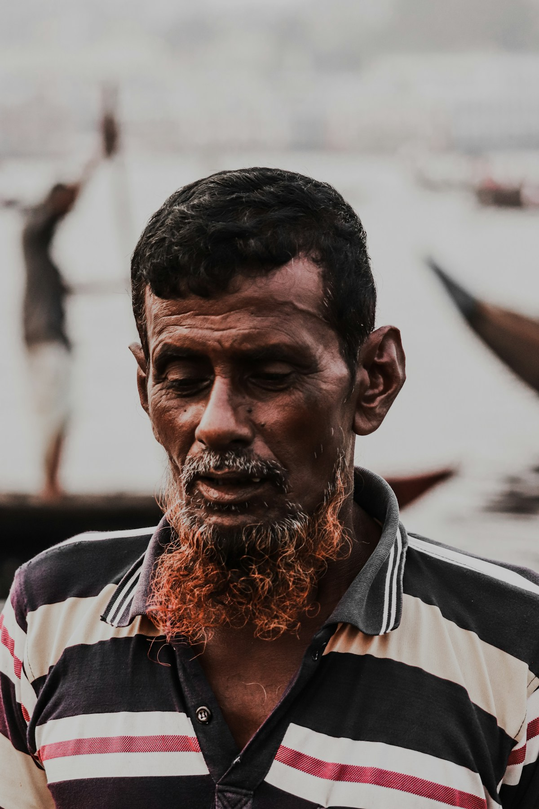
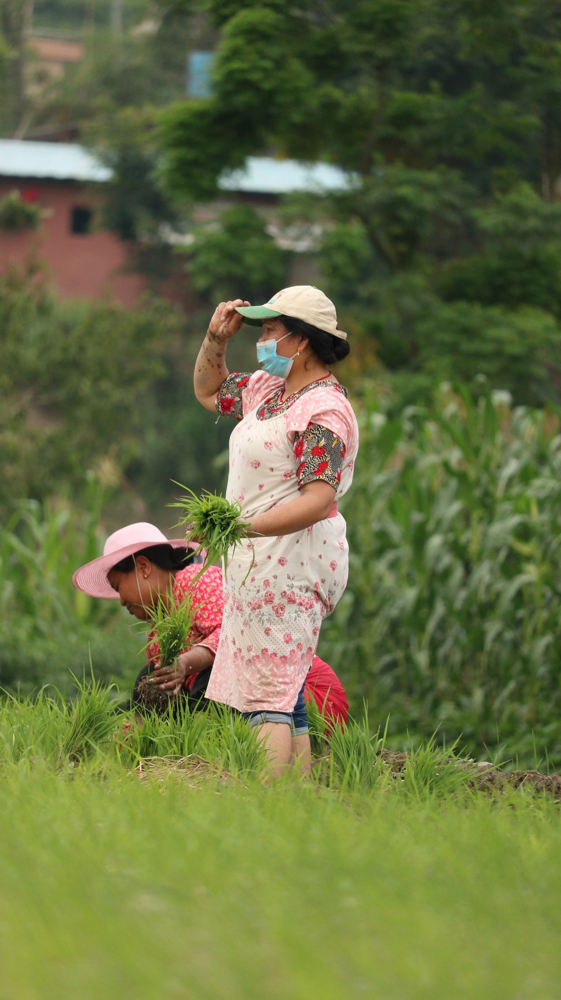
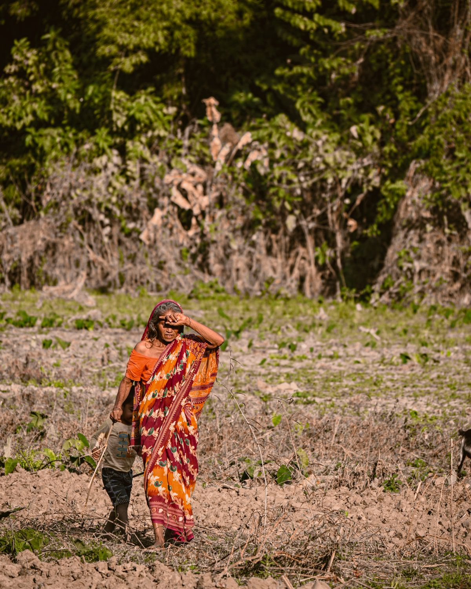

just picked
GOOD FOOD, CLOSE TO HOME
From Bangladeshi farmers to your family table
Fresh fish, greens, fruit and pantry goodness — sourced with care and delivered with a little more heart.
SHOP BY CATEGORY
Pick your people. Pick your produce.
From the morning market to the family kitchen, find the good stuff grown, raised and made nearby.
Good food, every direction.
DRAG TO DISCOVER
WHAT'S GOOD THIS WEEK
Right now, from the good earth.
seasonal
ice-cold
small batch

farm raised
happy hens
THE PEOPLE BEHIND THE PLATE
Meet our farmers.
Real connections.
Get to know the farms, the places and the seasonal produce behind your next meal.
Meet all producers ↗ Leafy greens
Leafy greensSavar · Dhaka
Rahman Family Farm
Leafy greens · 3 generations
View full profile

Himsagar mangoesRajshahi · Mango country
Mitali Mango House
Himsagar mangoes · Tree ripened
View full profile

River fishMawa · Padma river
Padma Catch
River fish · Small daily catch
View full profile

TomatoesNarayanganj · River edge
Nahar's Garden
Tomatoes · Slow grown
View full profile

Free-range eggsManikganj · Family yard
Maya's Homestead
Free-range eggs · Small flock
View full profile
 Fresh milk
Fresh milkMadhupur · Tangail
Madhupur Dairy
Fresh milk · Morning milking
View full profile
Fields, orchards & family farms across Bangladesh.
Stock portraits are illustrative, not verified farmer portraits.A LITTLE HELP CHOOSING
~20 sec01 / 03
Who's around your table?
Tell us a little about home and we'll make the first pick easy.
YOUR FIRST PICK
A box for the whole table
We'll start you with a bright mix of everyday favourites and something new to try.
See my matches
No food degree required. Just tell us what sounds good.
WHY URBOR
The closer it gets, the better it tastes.
We make the distance between a good farmer and a good meal feel wonderfully small.

Know where it came from
Every box carries a name, a place and a little story — never a mystery.
Fresh on purpose
Shorter journeys mean brighter greens, better fish and more flavour in every bite.
Good for the people growing it
You pay a fairer price. They get a fairer share. Everybody eats a little better.
FROM FARM TO FRIDGE
Good food takes a little care.
Here's the simple version of how a harvest makes its way home.
You choose
Find the food, farm or feeling you're after.
They prepare
Your farmer picks, packs or catches it with care.
We keep it moving
A short, thoughtful journey from their place to yours.
You make it yours
Cook, share, snack, repeat. The best part is yours.
GOOD WORDS, SHARED
Stories from the Sazzad table.
The kind of feedback that makes our whole team pause mid-lunch and smile.
“The fish was so fresh my mother called to ask where I got it. Now she's a Sazzad regular too.”
“I like knowing the name of the farm. It makes a normal Tuesday dinner feel like it has a beginning.”
“The little notes in the box are my favourite. Sazzad feels like a neighbour who knows good food.”
THE SAZZAD JOURNAL
A little more good to know.
 FIELD NOTES
FIELD NOTES AT HOME
AT HOME THE SHORT ROUTE
THE SHORT ROUTEINVEST IN URBOR
Grow something good together.
Interested in the future of fresh food in Bangladesh? Start a conversation about investing in URBOR and bringing farms closer to family tables.
Let's talk investmenthello@urbor.bd
THE FUTURE WE WANT TO BUILD
Closer to growers
Stronger connections between producers and the people they feed.
Care along the way
Thoughtful sourcing, handling and delivery from farm to home.
More family tables
Make seasonal food easier to discover and bring home.
READY WHEN YOU ARE